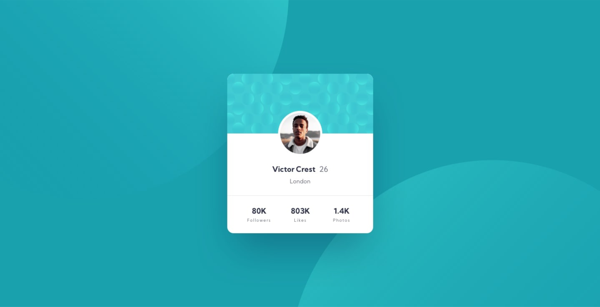
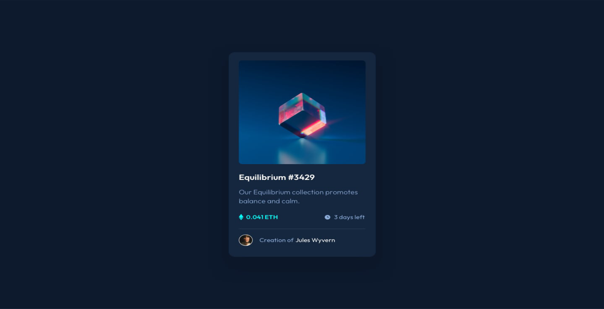
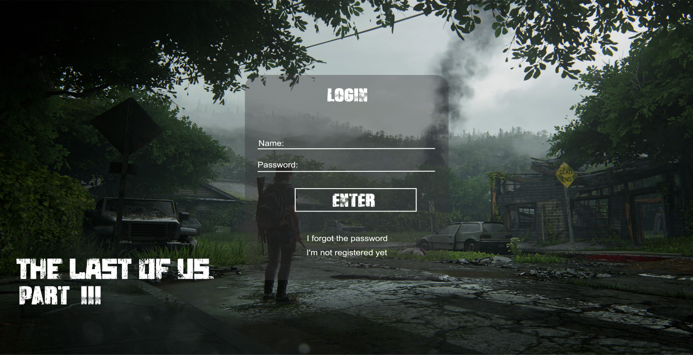

Olá, Seja bem-vindo, me chamo
André Vinícius
Desenvolvedor Web Front End

Sobre
Sou Desenvolvedor Web Junior com foco no Front End
Brasileiro de 31 anos, natural de São Luís do Maranhão. Sou graduando do curso de Ciência da Computação pela Universidade Cruzeiro do Sul. Tenho 9 anos de experiência na área técnica, voltada para o suporte ao usuário, mas o apreço e deslumbre pela área de programação, me faz buscar conhecimento e desenvolver projetos, no qual tenho liberdade de expressar minhas ideias de forma criativa, e assim também levar informação e conteúdo dinâmico aos usuários e clientes. Possuo diversos certificados de desenvolvimento web voltado para o front end, com experiência nas tecnologias HTML5, CSS3 e JavaScript. Constantemente estou em apredizado, buscando qualificação, conhecendo novas técnicas e recursos para o desenvolvimento. Estou aberto a propostas e desafios, entre em contato e vamos juntos iniciar seu projeto.
Projetos
Aqui estão alguns dos meus projetos já prontos. Você pode acessa-los clicando sobre eles.
Meu repositório de projetos está também disponível para visualização, através do link: https://github.com/AndreViniciusSG?tab=repositories.
Front-End and Back-End
Projeto desenvolvido com o intuito de diferenciar as duas áreas de desenvolvimento web, trazendo suas principais caracterísitcas, linguagens e tecnologias utilizadas.
Tecnologias utilizadas: HTML e CSS.

Profile Card Component
Projeto desenvolvido junto ao site Frontend Mentor como forma de desafio e estudo. Nele pude testar minhas habilidades com layout e responsividade.
Tecnologias utilizadas: HTML e CSS.
NFT preview card component
Projeto desenvolvido junto ao site Frontend Mentor como forma de desafio e estudo. Pude novamente estudar a responsividade através do flexbox, entender melhor sobre a importância e funcionamento das divs, além de técnicas de coloração.
Tecnologias utilizadas: HTML e CSS.
The Last Of Us III
Projeto desenvolvido como forma de estudo para criação de login. Utilizei o tema do game The Last Of Us e simulei uma tela de login para cadastro e recebimento da demo do jogo 3. Nesse projeto pude estudar mais sobre formulários e direcionamento de páginas.
Tecnologias utilizadas: HTML e CSS.
